3D Buggy
Every version of this page since 12 Nov 2026, newest first: what changed, and the captures and videos as the page showed them at the time.
Chaque version de cette page depuis le 12 nov. 2026, de la plus récente à la plus ancienne : ce qui a changé, et les captures et vidéos telles que la page les montrait à l’époque.
គ្រប់កំណែនៃទំព័រនេះ តាំងពីថ្ងៃទី 12 វិច្ឆិកា 2026 ពីថ្មីបំផុតទៅចាស់៖ អ្វីដែលបានផ្លាស់ប្តូរ និងរូបថតអេក្រង់ និងវីដេអូ ដូចដែលទំព័របានបង្ហាញនៅពេលនោះ។
Nothing on this page has been regenerated: every capture and video is the file the site published at the time, recovered from its Git history. What the site never published is not here. Since 21 November 2026, every change to the project page adds a version here, and the captures, videos and Last changes it replaces are kept.Rien sur cette page n’a été régénéré : chaque capture et chaque vidéo est le fichier que le site publiait à l’époque, retrouvé dans son historique Git. Ce que le site n’a jamais publié n’y figure pas. Depuis le 21 novembre 2026, chaque changement de la page du projet ajoute ici une version, et les captures, vidéos et derniers changements qu’il remplace sont conservés.គ្មានអ្វីនៅលើទំព័រនេះត្រូវបានបង្កើតឡើងវិញទេ៖ រូបថតអេក្រង់ និងវីដេអូនីមួយៗ គឺជាឯកសារដែលគេហទំព័របានផ្សាយនៅពេលនោះ ដែលបានយកមកវិញពីប្រវត្តិ Git របស់វា។ អ្វីដែលគេហទំព័រមិនដែលផ្សាយ មិនមាននៅទីនេះទេ។ តាំងពីថ្ងៃទី 21 ខែវិច្ឆិកា ឆ្នាំ 2026 ការផ្លាស់ប្តូរនីមួយៗនៃទំព័រគម្រោង បន្ថែមកំណែមួយនៅទីនេះ ហើយរូបថតអេក្រង់ វីដេអូ និងការផ្លាស់ប្តូរចុងក្រោយ ដែលវាជំនួស ត្រូវបានរក្សាទុក។
From the latest to the first.De la plus récente à la première.ពីកំណែចុងក្រោយ ដល់កំណែដំបូង។
-
Last changesDerniers changementsការផ្លាស់ប្តូរចុងក្រោយ
The page now ends with a summary of the repository’s latest commits, in English, French and Khmer.
La page se termine désormais par un résumé des derniers commits du dépôt, en anglais, en français et en khmer.
ឥឡូវនេះ ទំព័របញ្ចប់ដោយសេចក្តីសង្ខេបនៃ commit ចុងក្រោយរបស់ repository ជាភាសាអង់គ្លេស បារាំង និងខ្មែរ។
-
The living Angkor, and the filmAngkor vivant, et le filmអង្គរដែលមានជីវិត និងភាពយន្ត
The circuits are now planted from a satellite map, with jungle, rice fields, villages and moving elephants and macaques. The 30-second flyover gives way to the Grand Circuit’s full film (87 s, ten monuments), the Angkor gallery is renewed, and the game is featured on the home page.
Les circuits sont désormais plantés d’après une carte satellite, avec jungle, rizières, villages, éléphants et macaques en mouvement. Le survol de 30 secondes laisse la place au film complet du Grand Circuit (87 s, dix monuments), la galerie d’Angkor est renouvelée, et le jeu est mis en avant sur l’accueil.
ឥឡូវនេះ សៀគ្វីត្រូវបានដាំដើមឈើតាមផែនទីផ្កាយរណប មានព្រៃ វាលស្រែ ភូមិ ហើយមានដំរី និងស្វាដែលធ្វើចលនា។ វីដេអូហោះពីលើ 30 វិនាទី ត្រូវបានជំនួសដោយភាពយន្តពេញលេញនៃ Grand Circuit (87 វិនាទី វិមានដប់) វិចិត្រសាលអង្គរត្រូវបានធ្វើថ្មី ហើយហ្គេមនេះត្រូវបានលើកបង្ហាញនៅទំព័រដើម។
14 captures14 capturesរូបថតអេក្រង់ 14 · 1 video1 vidéoវីដេអូ 1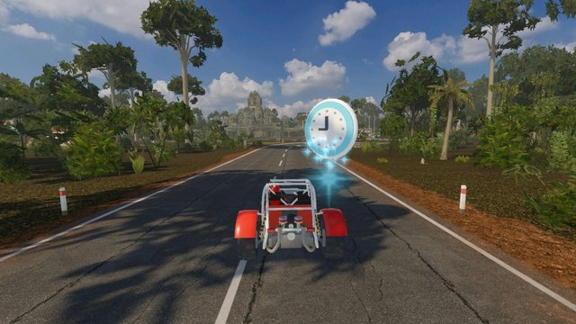
On the pageSur la pageនៅលើទំព័រ 
On the pageSur la pageនៅលើទំព័រ 
On the pageSur la pageនៅលើទំព័រ 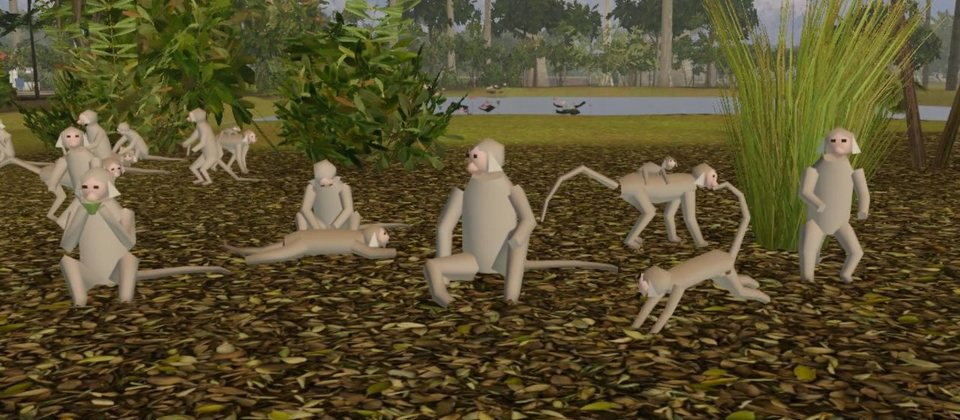
On the pageSur la pageនៅលើទំព័រ 
On the pageSur la pageនៅលើទំព័រ 
On the pageSur la pageនៅលើទំព័រ 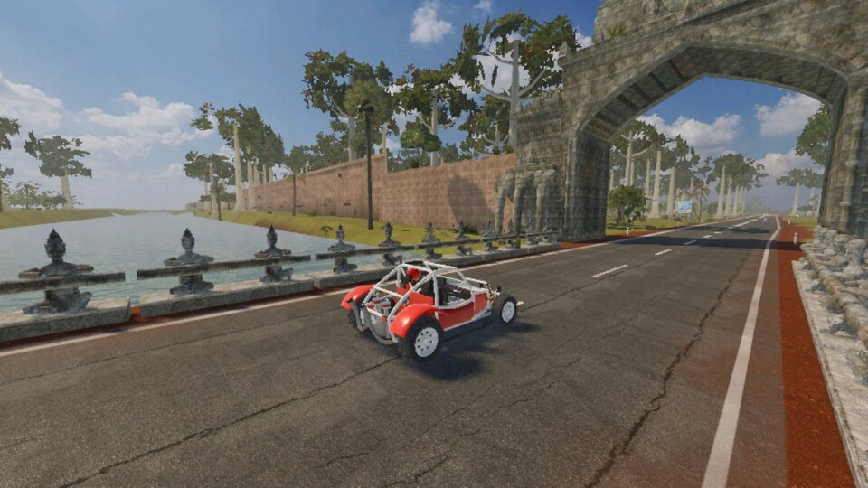
On the pageSur la pageនៅលើទំព័រ 
On the pageSur la pageនៅលើទំព័រ 
On the pageSur la pageនៅលើទំព័រ 
On the pageSur la pageនៅលើទំព័រ 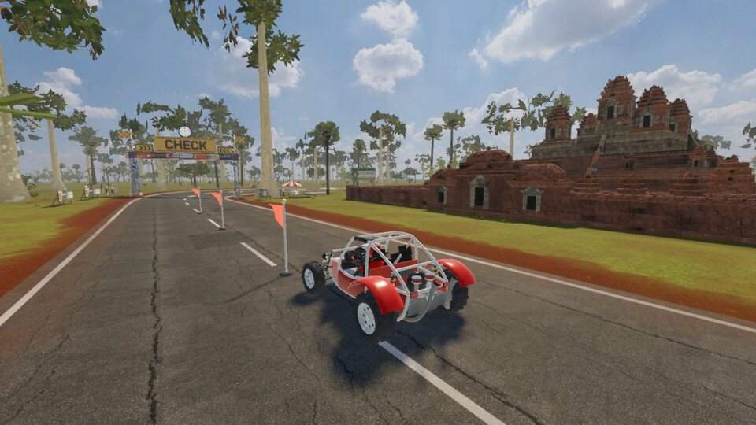
On the pageSur la pageនៅលើទំព័រ 
On the pageSur la pageនៅលើទំព័រ 
On the pageSur la pageនៅលើទំព័រ 
On the pageSur la pageនៅលើទំព័រ VideoVidéoវីដេអូ · On the pageSur la pageនៅលើទំព័រ -
The Grand Circuit flyoverLe survol du Grand Circuitការហោះពីលើ Grand Circuit
The Angkor section plays the aerial intro of the Grand Circuit, from the game’s own recording: 30 seconds over Angkor Wat, the Bayon, Preah Khan and Pre Rup, then down to the start line.
La section Angkor diffuse l’introduction aérienne du Grand Circuit, tirée de l’enregistrement du jeu lui-même : 30 secondes au-dessus d’Angkor Vat, du Bayon, de Preah Khan et de Pre Rup, puis la descente vers la ligne de départ.
ផ្នែកអង្គរ ចាក់វីដេអូណែនាំពីលើអាកាសនៃ Grand Circuit ដែលថតដោយហ្គេមខ្លួនឯង៖ 30 វិនាទី ពីលើអង្គរវត្ត បាយ័ន ព្រះខ័ន និងប្រែរូប រួចចុះមកខ្សែចាប់ផ្តើម។
1 video1 vidéoវីដេអូ 1VideoVidéoវីដេអូ · Removed on 16 Nov 2026Retirée le 16 nov. 2026ត្រូវបានដកចេញ 16 វិច្ឆិកា 2026 -
The Angkor circuitsLes circuits d’Angkorសៀគ្វីអង្គរ
Seven stages now: the Petit and Grand Circuits join the stage table, with a section on Angkor (roads traced from OpenStreetMap at 1:2.5, the photographic look, the aerial flyover) and six captures. The header becomes the causeway to the South Gate of Angkor Thom, and the strip of stage captures leaves the page.
Sept étapes désormais : le Petit et le Grand Circuit entrent dans le tableau des étapes, avec une section sur Angkor (routes tracées d’après OpenStreetMap au 1:2,5, rendu photographique, survol aérien) et six captures. L’image d’en-tête devient la chaussée de la porte Sud d’Angkor Thom, et le bandeau des captures d’étapes quitte la page.
ឥឡូវនេះមានដំណាក់កាលប្រាំពីរ៖ Petit Circuit និង Grand Circuit ចូលក្នុងតារាងដំណាក់កាល ជាមួយផ្នែកស្តីពីអង្គរ (ផ្លូវគូរតាម OpenStreetMap មាត្រដ្ឋាន 1:2.5 រូបរាងដូចរូបថត និងការហោះពីលើ) និងរូបថតអេក្រង់ប្រាំមួយ។ រូបភាពក្បាលទំព័រ ក្លាយជាផ្លូវឆ្ពោះទៅទ្វារខាងត្បូងនៃអង្គរធំ ហើយបន្ទះរូបថតដំណាក់កាល ត្រូវបានដកចេញពីទំព័រ។
13 captures13 capturesរូបថតអេក្រង់ 13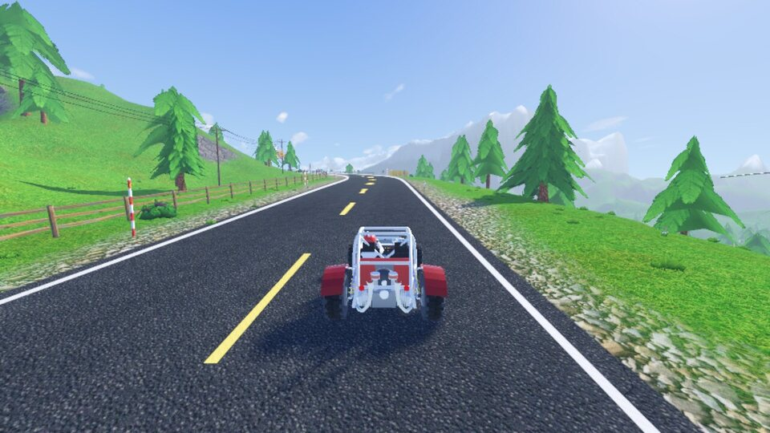
On the pageSur la pageនៅលើទំព័រ 
On the pageSur la pageនៅលើទំព័រ 
Replaced on 16 Nov 2026Remplacée le 16 nov. 2026ត្រូវបានជំនួស 16 វិច្ឆិកា 2026 
Replaced on 16 Nov 2026Remplacée le 16 nov. 2026ត្រូវបានជំនួស 16 វិច្ឆិកា 2026 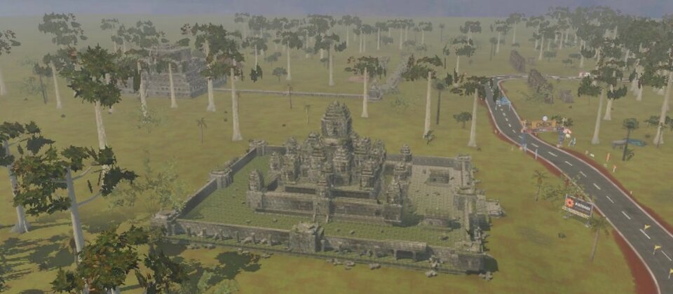
Removed on 16 Nov 2026Retirée le 16 nov. 2026ត្រូវបានដកចេញ 16 វិច្ឆិកា 2026 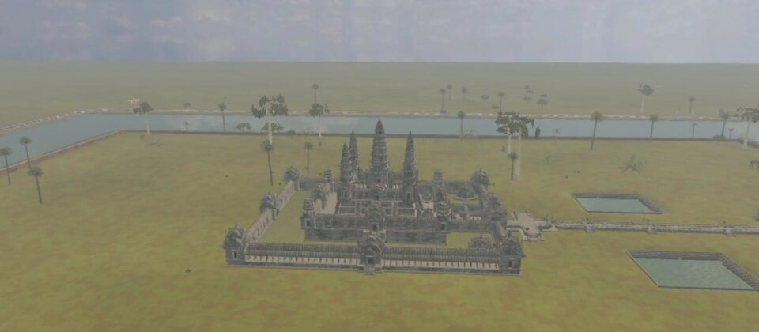
Removed on 16 Nov 2026Retirée le 16 nov. 2026ត្រូវបានដកចេញ 16 វិច្ឆិកា 2026 
Replaced on 16 Nov 2026Remplacée le 16 nov. 2026ត្រូវបានជំនួស 16 វិច្ឆិកា 2026 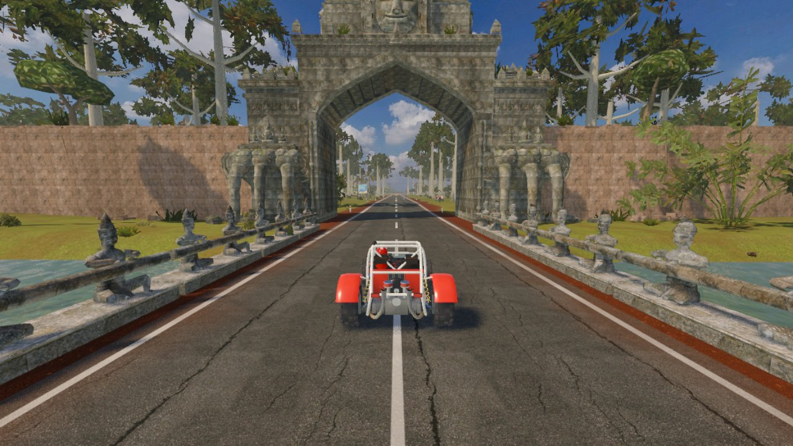
Removed on 16 Nov 2026Retirée le 16 nov. 2026ត្រូវបានដកចេញ 16 វិច្ឆិកា 2026 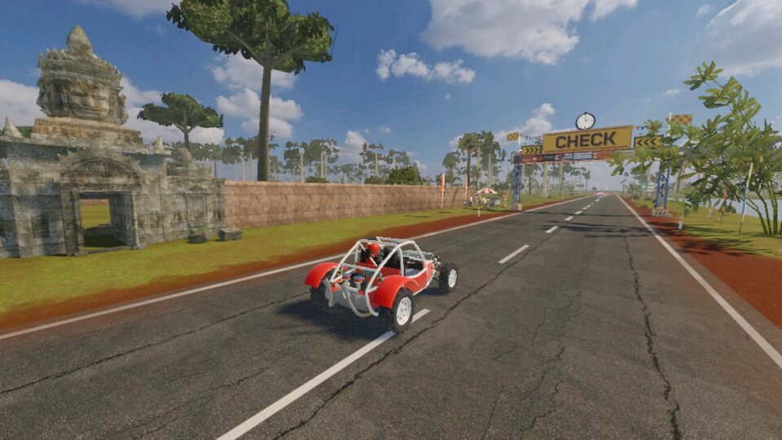
Replaced on 16 Nov 2026Remplacée le 16 nov. 2026ត្រូវបានជំនួស 16 វិច្ឆិកា 2026 
On the pageSur la pageនៅលើទំព័រ 
On the pageSur la pageនៅលើទំព័រ 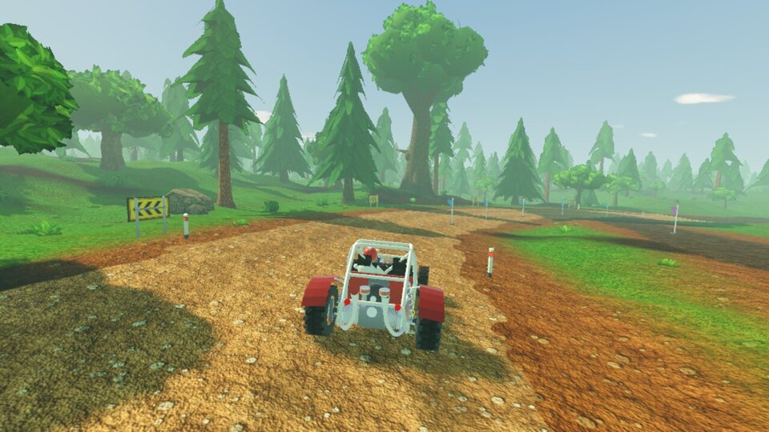
On the pageSur la pageនៅលើទំព័រ 
On the pageSur la pageនៅលើទំព័រ -
The page in KhmerLa page en khmerទំព័រជាភាសាខ្មែរ
The page now reads in Khmer as well as English and French; the language button cycles EN / FR / KM and follows the choice made on the home page.
La page se lit désormais aussi en khmer ; le bouton de langue passe d’EN à FR puis KM et suit le choix fait sur l’accueil.
ឥឡូវនេះ ទំព័រនេះអាចអានជាភាសាខ្មែរ បន្ថែមលើភាសាអង់គ្លេស និងបារាំង។ ប៊ូតុងភាសាប្តូរវេន EN / FR / KM ហើយធ្វើតាមជម្រើសដែលបានធ្វើនៅទំព័រដើម។
-
Added to the siteArrivée sur le siteចូលមកក្នុងគេហទំព័រ
3D Buggy gets a card in the Games section and its own page, with the captures of its five stages from the game’s repository; in Projects it is tagged Android / Games.
3D Buggy reçoit une carte dans la section Jeux et sa propre page, avec les captures de ses cinq étapes tirées du dépôt du jeu ; dans Projets, il est classé Android / Jeux.
3D Buggy ទទួលបានកាតមួយក្នុងផ្នែកហ្គេម និងទំព័រផ្ទាល់ខ្លួន ជាមួយរូបថតអេក្រង់នៃដំណាក់កាលទាំងប្រាំ ពី repository របស់ហ្គេម។ ក្នុងផ្នែកគម្រោង វាត្រូវបានចាត់ជា Android / Games។
7 captures7 capturesរូបថតអេក្រង់ 7
Replaced on 16 Nov 2026Remplacée le 16 nov. 2026ត្រូវបានជំនួស 16 វិច្ឆិកា 2026 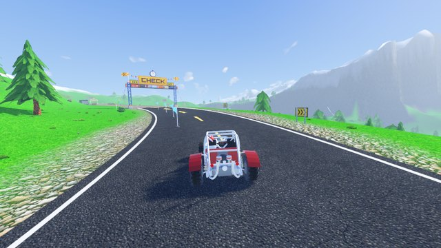
Replaced on 15 Nov 2026Remplacée le 15 nov. 2026ត្រូវបានជំនួស 15 វិច្ឆិកា 2026 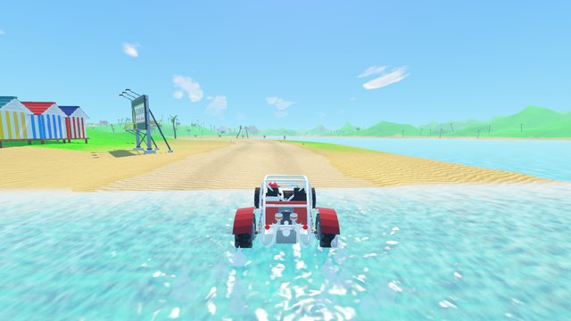
Published, never shown on the pagePubliée, jamais affichée sur la pageបានផ្សាយ ប៉ុន្តែមិនដែលបង្ហាញលើទំព័រ 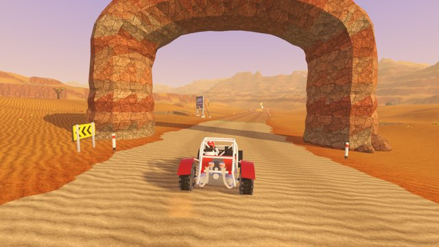
Published, never shown on the pagePubliée, jamais affichée sur la pageបានផ្សាយ ប៉ុន្តែមិនដែលបង្ហាញលើទំព័រ 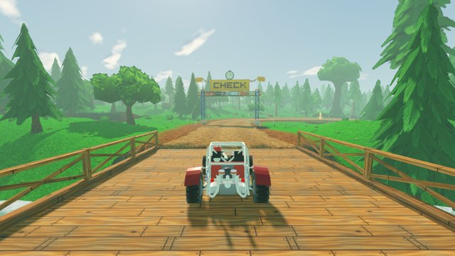
Replaced on 15 Nov 2026Remplacée le 15 nov. 2026ត្រូវបានជំនួស 15 វិច្ឆិកា 2026 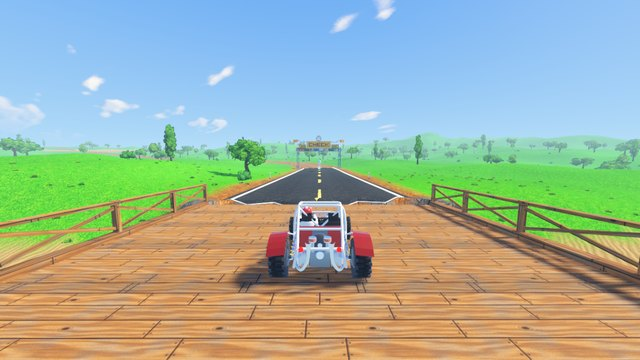
Published, never shown on the pagePubliée, jamais affichée sur la pageបានផ្សាយ ប៉ុន្តែមិនដែលបង្ហាញលើទំព័រ 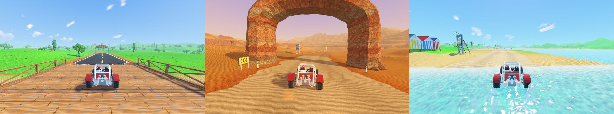
Removed on 15 Nov 2026Retirée le 15 nov. 2026ត្រូវបានដកចេញ 15 វិច្ឆិកា 2026